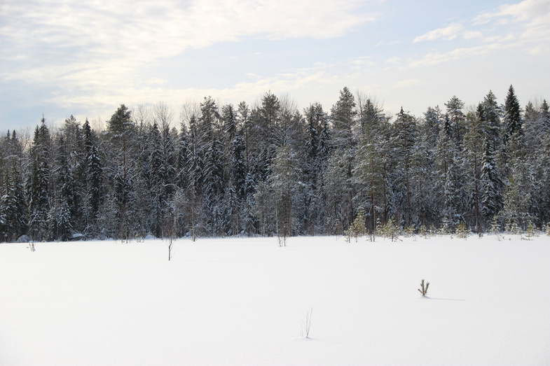
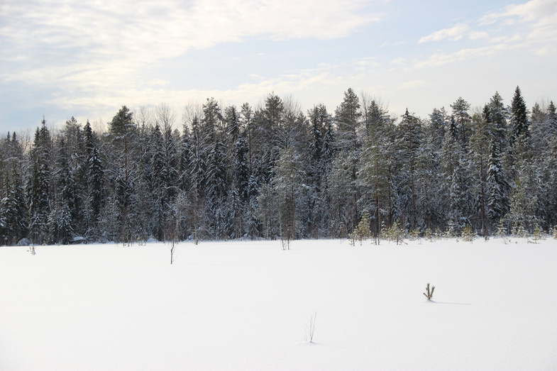
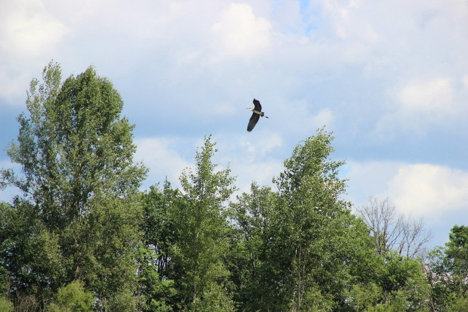
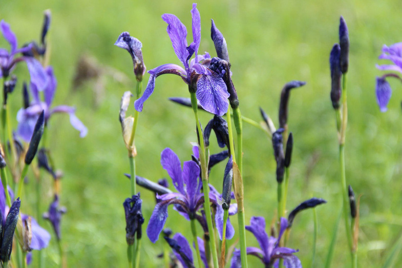
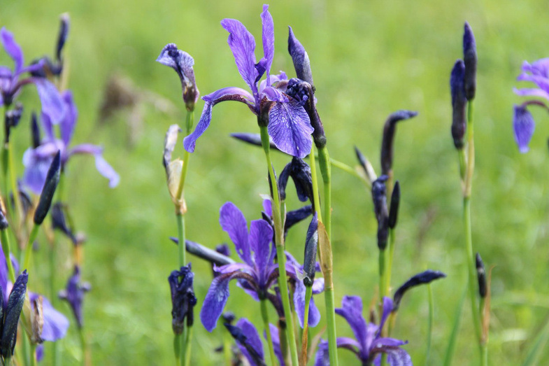
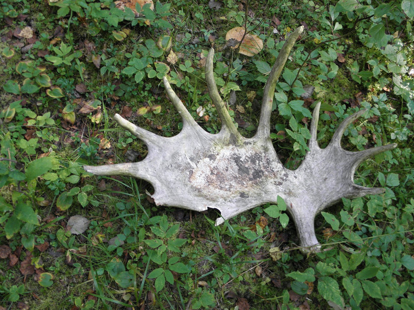
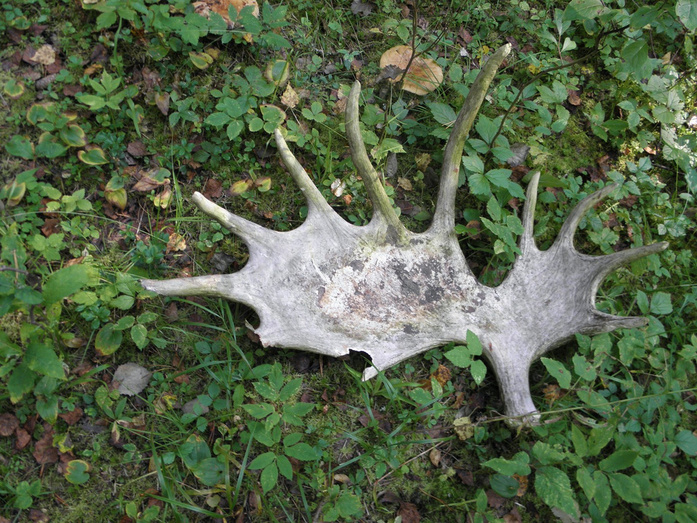

В 2,5 часах от Кирова находится единственный во всей Кировской области заповедник «Нургуш», где можно полюбоваться спокойной и величественной красотой русской природы. В День заповедников и национальных парков, который отмечается 11 января, мы решили вспомнить его историю и показать, как сегодня выглядят нетронутые леса и озёра Вятского края.
В заповедник «Нургуш» входят два участка: «Нургуш» на территории Котельничского района и «Тулашор» в Нагорском (находится на расстоянии 370 км). После того, как в 2010 году к «Нургушу» присоединили «Тулашор», по площади заповедник вырос до 23449,7 га. Далее речь пойдёт преимущественно о котельничском участке.
Покрытая лесами и озёрами земля приобрела охранный статус относительно недавно — в 1994 году. В советские годы «Нургуш» занимал территорию охотничьего заказника, на площади которого охранялся не весь природный комплекс, как сейчас. Тем не менее именно советские власти задумались о сохранении этой природной жемчужины. До революции здесь вели хозяйственную деятельность: вырубали молодые деревья для изготовления полозьев саней и дуг конских упряжек, ловили рыбу, охотились. А после коллективизации ресурсами пользовался птицесовхоз.Масштабное исследование территории, необходимое для создания заказника, проводил известный краевед Александр Фокин. Он же дал имя заказнику — по названию озера Нургуж. Со временем буква «ж» превратилась в «ш», а ударение сместилось на первую «у». У происхождения самого слова «нургуж» есть много версий. Сейчас считается, что оно имеет марийские корни. «Нур» в переводе с марийского переводится как «поле», а «куж», которое трансформировалось в «гуж», — «низина».

Одной из главных целей учреждения заказника было восстановление почти полностью уничтоженной популяции бобра. Так что первым делом новый заказник заселили выхухолями и бобрами. Привозили в заказник и других зверей со всего Советского Союза и Кировской области. Бобры были родом из Белоруссии и Воронежской области, ондатры — из Белохолуницкого района, а енотовидные собаки — из Калининской области. Приживались и привезённые из других регионов растения.

В качестве заказника «Нургуш» просуществовал более 40 лет. К сожалению, люди далеко не всегда к нему относились достаточно бережно. Так, в 1969 году «Кировская правда» сообщала, что Котельничский лесхоз разрешил некоторых хозяйствам заготовлять там древесину для изготовления дуг и полозьев саней. В результате были вырублены 3 тысячи вязов и свыше тысячи дубов. Но стараниями сотрудников заказника этот природный оазис благополучно сохранился до наших дней. Одним из таких хранителей был егерь Иван Андриянов, который прожил на берегу Нургуша три десятилетия. В интервью «Кировской правде» он рассказывал, что в заказник периодически заглядывали браконьеры.После увольнения Ивана Андриянова территория заказника охранялась плохо. Туда всё чаще заглядывали рыболовы с сетями, писал замдиректора по научной работе «Нургуша» Павел Бородин.Чтобы донести до кировчан важность сохранения природы, в заказнике организовали туристический маршрут. В 60-70-е годы его ежегодно посещали 600–700 туристов. Нетронутые топором леса и живописные озёра и сейчас привлекают ценителей русской природы.
Сегодня на всей территории заповедника запрещена любая хозяйственная деятельность, под охраной находится весь природный комплекс: флора, фауна, почва, вода и так далее. Собирать грибы и ягоды и даже срывать цветы здесь запрещено, а поохотиться можно разве что с фотоаппаратом.Главная цель создания заповедника — охранять среднетаёжные ландшафты в пойме реки Вятки в их первозданном, естественном состоянии. Экосистема функционирует сама по себе, как будто людей здесь нет и никогда не было.
 

Обилие озёр и речек и большие запасы рыбы, в свою очередь, делают заповедник привлекательным местом обитания птиц. Каждый год здесь селится символ «Нургуша» — орлан-белохвост, одна из самых крупных хищных птиц в России. Размах крыльев орлана достигает 230 сантиметров. Также в заповеднике могут обитать чёрные гагары, чёрные аисты, лебеди-кликуны, филины, дрозды, зимородки и даже очень редкие для нашего края беркуты. Всего на территории «Нургуша» обитают 197 видов птиц, занесённых в Красные книги Кировской области и России.

Почти всю территорию заповедника — 72% — занимают леса, нетипичные для Кировской области. Это сплошной массив коренных, ненарушенных широколиственных лесов, проникших 7–10 тысяч лет назад до своего северо-восточного предела в европейской части России. В заповеднике можно увидеть дубы, липы, вязы, белые ивы и чёрные тополя, полюбоваться различными цветами, которые редко где встретишь в Кировской области.
 

Широколиственные леса, как правило, отличаются большим видовым разнообразием. Это касается и животных. В «Нургуше» обитает 65 видов животных, занесённых в Красную книгу Кировской области, из них 22 вида — в Красную книгу России. Это выхухоль, нетопырь лесной, рыжая вечерница и европейская норка. Больша?я часть зверей относится к околоводным обитателям: «Нургуш» населяет множество бобров и ондатр. Могут блуждать по лесам заповедника и знакомые всем медведи, волки, зайцы, а на участке «Тулашор» — северные олени, рыси и бурундуки.
 

Но турист увидит только «призрак» этих животных — случайные следы, оставленные зверями в доступных для людей местах, ведь обычным людям перемещаться по заповеднику можно только по специальным экологическим тропам. Чуть ближе с обитателями «Нургуша» могут «познакомиться» только сотрудники заповедника, которые в течение года инспектируют территорию, проводят экологический мониторинг, поддерживают санитарную безопасность и просвещают посетителей о важности заботы о живой природе. Учитывая огромное количество несанкционированных свалок в Кировской области и периодические выбросы нефтепродуктов в реки, загрязнение воздуха автотранспортом и предприятиями, сохранение природного оазиса — не просто работа, а настоящая миссия.